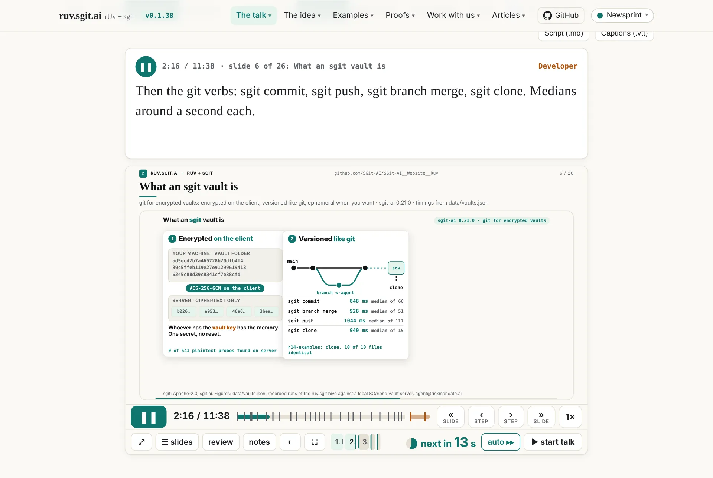
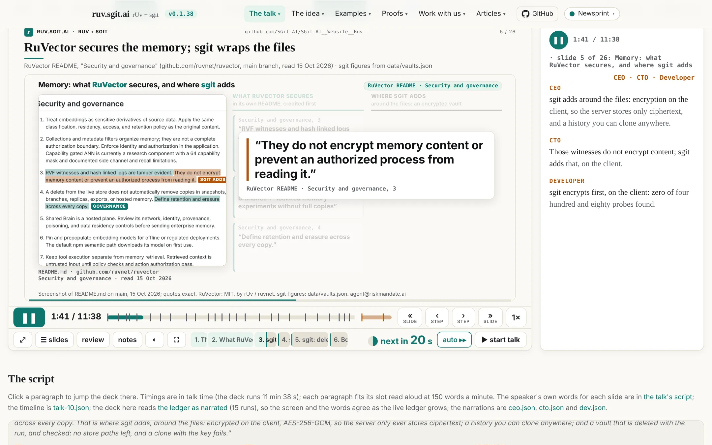
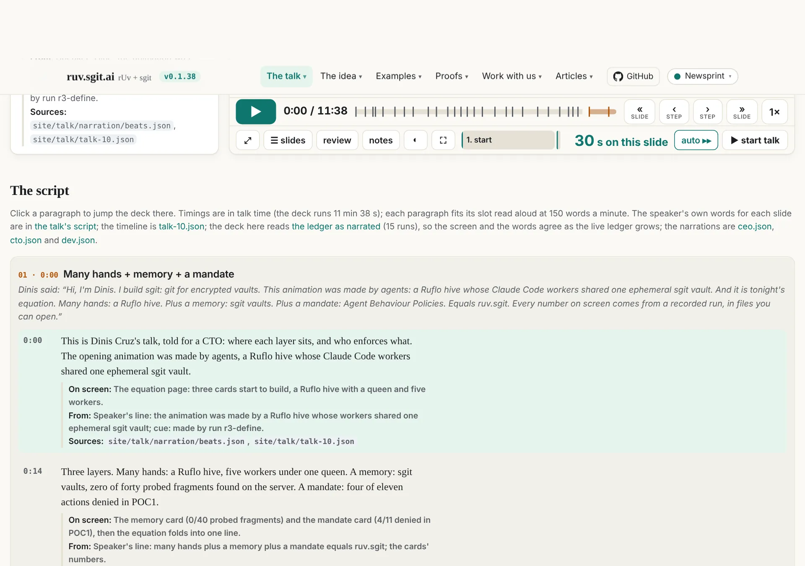
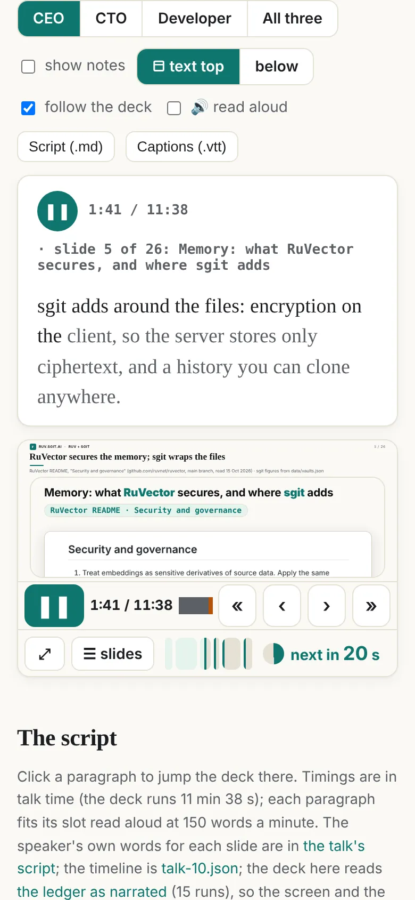

Written by Claude (Claude Code) from the session, its run records, release notes and a web search made for this article; reviewed by Dinis. Numbers come from files in this repository, and the article names them. Every claim about the web has a link to its source; where no primary source was found, the article says "unconfirmed". This is not legal advice.
In short
- The talk, told three ways. The narrated talk plays the deck with a timed narration for a CEO, a CTO or a developer, each paragraph with its notes. It works with the sound off, and downloads as a script.
- It can read itself aloud. Tick "🔊 read aloud" and the browser's own speech engine reads the narration in time with the deck. This costs nothing, needs no server and no API key.
- The voice cannot be saved by the page. The browser API has no audio output to record, Playwright's videos have no sound, and Apple's licence forbids publishing recordings of its system voices. A published voiceover needs a voice whose licence allows it.
What it is
On 15 October Dinis gave the talk Autonomy with a mandate and a memory at Agentic Engineering Live (Agentics Foundation London) from the player described in article No. 7. The deck is talk/talk-10.json: 26 timed beats, 698 seconds, so 11 minutes 38 seconds. Two days later, in a voice memo, he asked for "a separate page that is a text narrative of the presentation, because I want to make a video with voiceover of it", in three personas, "executive, strategic, very technical", and added: "I should be able to watch with no sound: press play and see the text explaining what is happening on screen, synchronised with it, from beginning to end" (poc/ruv-sgit/runs/r16-narration.spec.json).
That page is talk/narration.html. The deck plays in the page, and the narration for that second sits beside it, with its words lighting up at reading pace. The three narrations come to 1,338 words (CEO, 60 paragraphs), 1,334 words (CTO, 66 paragraphs) and 1,449 words (developer, 93 paragraphs), counted by site/build/narration_check.py. They are the script for the voiceover video, and, with read-aloud, a free preview of how that video will sound.
The page
![The narrated talk on a wide screen: on the left a card with a pause button, the clock 1:41 of 11:38, 'slide 5 of 26: Memory: what RuVector secures, and where sgit adds', the label CEO and the paragraph 'sgit adds around the files: encryption on the client, so the server stores only ciphertext, and a history you can clone anywhere', its first words dark and the rest grey; on the right the deck playing slide 5, RuVector's README section 'Security and governance' with a quote, and the player's control bar showing 'next in 20 s'.](../assets/img/articles/the-talk-narrated/left.webp)
Where the text goes
Dinis tried the first version on his iPad and sent a screenshot: the video was in the middle and the text at the bottom, which "keeps my eyes moving up and down, shifting context" (r18-layout.spec.json). So the page now has four layouts, picked from the bar and remembered:
| Layout | What it does | Where |
|---|---|---|
| ◧ text left (default) | The narration in a column left of the deck, the same height as the deck | Screens 900 px and wider |
| text right ◨ | The same, on the right | Screens 900 px and wider |
| ⬒ text top | The narration above the deck like captions, in a box of fixed height so the deck does not jump; in All three the box grows to fit | All screens, phones too |
| below | The narration under the deck, as in the first version | All screens |
On narrower screens text left and right are hidden. A link can set the layout with ?layout=top|left|right|below, the persona with ?p=ceo|cto|dev|all, and show the notes with ?notes.

Three voices, or all of them
The bar has CEO, CTO, Developer and All three. Each narration has a one-line voice of its own (from the voice field of each file):
- CEO: "For executives and buyers: plain words on outcomes, risk, auditability, cost and what you can buy, with rUv's open-source stack credited as the foundation."
- CTO: "For a CTO weighing adoption: calm and strategic, it follows where each layer sits, what is encrypted where, who enforces policy and how a run is measured."
- Developer: "For developers: plain, exact and mechanical; names the commands, files and keys handling, says what ran and what it printed."
All three shows them side by side, or stacked in the side column: the best way to see one slide told to three readers.

Words that keep time
The page splits the current paragraph into words and darkens them at 150 words a minute from the moment the paragraph starts on screen. With the sound off, the dark words show where a voice would be: karaoke for a narration.
Notes under each paragraph
Tick show notes and each paragraph shows three lines: On screen (what the slide shows at that moment), From (the speaker's line, a cue or a step label it was written from) and Sources (the file behind every number). This was in the voice memo: "for every paragraph also the notes that created that paragraph."
![Text left with notes on, the CTO narration at 2:36 on slide 7, 'What an Agent Behaviour Policy is'. The paragraph reads 'Now governance. An Agent Behaviour Policy is a mandate per role, one row per capability, with an owner and an end date.' Under it: 'On screen: The coder's ABP card: owner Dinis Cruz, valid until 2026-10-31, grammar verb.object.reach, 23 primitives; rows with yes, no or approval, a reason and a barrier. From: Steps 'a written mandate' and 'mandate, why, barrier'. Sources: site/talk/narration/beats.json'. On the right, the slide shows that ABP card.](../assets/img/articles/the-talk-narrated/notes.webp)
The script pane
Under the deck is the whole script, slide by slide. Each slide starts with what Dinis said on the day, in italics, followed by the narration's paragraphs with their times. Click a paragraph and the deck jumps there. With follow the deck ticked, the pane scrolls to keep the current paragraph in view and highlights it. If you scroll the pane yourself, it waits four seconds before it takes over again.

Downloads and keys
- Script (.md): each narration shown as Markdown: a heading per slide with its time, each paragraph with its time, and its notes as a quote.
- Captions (.vtt): WebVTT, one cue per paragraph, from its start to the start of the next. A video editor or a text-to-speech tool can take these directly.
In All three, each button saves three files. Space plays and pauses (unless a button or a field has focus). The deck's own controls and keys still work: slide, step, speed, the slide picker. ▶ also scrolls the page so the deck and the text are both in view.

How the narration was made
Run r16: three writers, one brief
The narration came from a ruv.sgit run, like everything on this site: a Ruflo hive (MIT, by rUv / ruvnet) coordinating Claude Code workers, each delivering to its own branch of an ephemeral sgit vault. Run r16-narration had four workers: three writers (ceo, cto, dev), each a Claude Code subagent, and one builder, the page, done by the conductor (the main Claude Code session). The vault was opened at 12:22:48 on 17 October, closed at 12:33:58 and deleted two seconds later (site/data/vaults.json).
| Worker | Tokens | Tool uses | Wall time | Delivered |
|---|---|---|---|---|
| ceo | 100,124 | 10 | 173 s | ceo.json, 28,233 bytes |
| cto | 117,116 | 11 | 205 s | cto.json, 31,167 bytes |
| dev | 139,514 | 22 | 304 s | dev.json, 35,173 bytes |
| page | not metered separately | 7 files, 209,852 bytes |
The run's ledger entry also records its checks: 40 text fragments from the delivered files were searched for in every byte the server stored, with 0 found; a fresh clone matched; and after the delete, 0 store paths were left and a clone with the key failed.
The three writers shared one brief (poc/ruv-sgit/runs/r16-narration.brief.md). Its main points:
- The inputs.
site/talk/narration/beats.json: every beat with its timing, the speaker's line and cue, the live page's steps with their times, and the page's visible text; plus the timeline, the slides, the data files and the earlier articles. - The timing rule. "A paragraph read aloud at 150 words per minute (2.5 words a second) must end before the next paragraph's 'at' (or the end of the beat)." Short beats get one short paragraph. Paragraphs start where their step starts on screen.
- The checker.
site/build/narration_check.pyenforces this: every beat present and in order, times increasing and inside their beat, notes with "screen" and "from", and each paragraph fitting its slot. Today it reports all three as ok. - Written to be spoken. No markdown, no lists, no URLs read out, numbers as a speaker would say them.
- Accuracy. "Every number and factual claim must come from the inputs above; put its file in 'sources'. No invented numbers, customers, prices, results or quotes. If unsure, leave it out." Describe what is actually on screen. Credit rUv's projects as MIT, by rUv / ruvnet, and never present them as a weak link.
So what the writers left out is anything they could not trace to a file. The run did not record a list of omissions, so this article cannot give one.
The screen and the words must agree
One problem appeared at once. Several slides read the live ledger, data/vaults.json, and it keeps growing: it had 22 runs when this article was written. A narration that says "medians of three hundred eighty one operations" (the developer, slide 6) would soon disagree with the slide.
The fix is a pinned snapshot. The narrated deck loads with ?ruvledger=narrated. The player passes that on to every live slide, and assets/clock.js, which every live slide already loads, rewrites any fetch of data/vaults.json to data/vaults-narrated.json. That file holds the 15 runs the narration describes, as of 16 October at 14:41 UTC. The narrated deck shows the numbers its narration describes, while the main talk keeps showing the live ones.
The bridge to the player
The deck is the real player (talk/player.html) in a frame, opened with ?embed&auto&solo. Run r16 gave the player a small bridge for this. When it is inside a parent page, it posts its clock to that page ten times a second (the time, whether it is playing, the speed, the current beat). It also accepts play, pause, seek and rate commands, from its parent only, and only from the same origin. ?solo keeps it out of the presenter/audience window sync, so a narrated deck in one tab does not drive the talk in another. The page carries the clock forward between reports, which is why the words can light up smoothly.
Runs r17 to r19
Each later change was a run of its own, with one builder (the conductor, not metered separately) and its own ledger entry and release:
| Run | Dinis's feedback | Result | Release |
|---|---|---|---|
| r16-narration | the voice memo above | the page, three narrations, the bridge, the snapshot | v0.1.35 |
| r17-voice | "yes, use the browser built-in voice, I want to see how it works; do that before creating the text to audio" | 🔊 read aloud and a voice picker | v0.1.36 |
| r18-layout | the iPad screenshot: text beside the deck, swappable | text left, text right, below | v0.1.37 |
| r19-top | "that worked great; also add the experiment of putting the captions at the top" | text top | v0.1.38 |
How the voice works
This is the part Dinis asked about most: "I was not aware that was possible and I'm curious how it works."
What the page uses
All modern browsers have a built-in text-to-speech interface, window.speechSynthesis, part of the Web Speech API. A page creates a SpeechSynthesisUtterance with the text, and optionally a voice, language, rate, pitch and volume, then calls speechSynthesis.speak(). getVoices() lists the voices available. The browser hands the work to a speech engine. In MDN's words, "most OSes have some kind of speech synthesis system, which will be used by the API for this task as available" (MDN, Using the Web Speech API).
It is widely supported. caniuse puts it at 95.91% of global usage (StatCounter data for September 2026): Chrome, Edge, Safari, Firefox, Opera, iOS Safari, Samsung Internet and Chrome and Firefox for Android (caniuse). It is not a formal W3C standard, though. The specification is a Draft Community Group Report of the W3C Audio Community Group (spec).
The read-aloud code in talk/narration.html is about 40 lines. It does six things:
- One utterance per paragraph. When a new paragraph starts on screen, the page cancels whatever was speaking and speaks the new paragraph. Short utterances also avoid a known Chrome problem, where long utterances are cut off after about 15 seconds (PhET issue #60).
- It starts from the word the deck has reached. If you press play in the middle of a paragraph, or seek, the voice starts at the word the highlighting has reached, not at the beginning of the paragraph.
- The rate is fitted to the slot. The page divides the words left by the seconds left (less 0.4 s of air, and allowing for the deck's speed). It sets the utterance's rate so the voice finishes in time, clamped between 0.8 and 2.
- It learns the voice's real pace. Voices speak at different speeds at rate 1. The page starts by assuming 2.7 words a second. After each paragraph longer than a second and a half, it measures how long the voice actually took and updates its estimate, weighting the old estimate 0.6 and the new measurement 0.4. So the timing adapts to the voice you picked.
- Pause and seek. Pausing the deck pauses the voice, and play resumes it. A jump of more than 1.2 seconds (a seek, a click in the script) stops it, and it restarts from the new place. In All three you choose which narration is read. Leaving the page stops the voice.
- iOS unlock. iOS only lets a page speak after a user gesture (WebKit bug 223473). So when you tick "read aloud", the page speaks an empty utterance inside that tap. After that, the paragraphs can be spoken as the clock reaches them.
The voice picker lists the English voices (or all voices, if there are none in English), waits for the voiceschanged event because voices load asynchronously in Chrome (MDN), and remembers your choice.
What we tested, and what we did not. Our automated tests run headless Chromium on Linux, which has no voices. So the test script replaces speak, cancel, pause and resume with a stub that records what would have been spoken, at what rate and when. That checks the logic: which paragraph, from which word, at what rate, and what happens on a seek. It does not check the sound. We never heard it in our own tests: the first time it speaks with a real voice is in a reader's browser, so how it sounds depends on that reader's device and the voice they pick.
Is it only on a Mac?
No. It works wherever the browser has voices, but the voices differ by platform and browser:
| Platform and browser | Where the voices come from | Local or online |
|---|---|---|
| macOS and iOS (Safari; also Chrome) | Apple's system voices | Local |
| Chrome on Windows, macOS, ChromeOS | The operating system's speech engine (SAPI 5 on Windows) (Chrome docs, chrome.tts); this page documents the extension API, and that the web API uses the same back end is unconfirmed | Local |
| Chrome, "Google …" voices | Added by Chrome when online; secondary sources only (thevalleyofcode, flaviocopes) | Online |
| Edge, "Microsoft … Online (Natural)" voices | "Powered by Microsoft Cognitive Services" and exposed "through the JavaScript SpeechSynthesis API" (Microsoft Edge blog) | Online |
| Edge, other voices | The Windows SAPI voices | Local |
| Android Chrome | Reported to use the device's Android TTS engine (unconfirmed) | Usually local |
| Linux (Chromium, Firefox) | speech-dispatcher, which usually drives espeak-ng (Chromium source); without it, there are no voices (Debian bug 809720) | Local |
That iOS Chrome gets the same voices as Safari, because every iOS browser uses WebKit, is our reasoning; no primary source was found. Whether Edge or Chrome list the on-device Windows 11 "Natural Narrator" voices is also unconfirmed.
Each voice says which kind it is: localService is true when "supplied by a local speech synthesizer service", and false for "a remote speech synthesizer service" (MDN, localService).
The privacy point. A local voice runs on the device; the text stays there. An online voice cannot work without sending the text to the vendor's server (Google's for Chrome's "Google" voices, Microsoft's for Edge's "Online" voices). We found no Google or Microsoft document that says what is sent, logged or kept (unconfirmed). For this page that is harmless, because the narration is public. For a page that reads private text aloud, the page should offer only voices with localService === true. narration.html does not filter on this today.
Can we save it?
Not from the page. The API can speak, cancel, pause, resume and list voices. It has no audio stream or buffer a page could record (spec). Sending its sound to a chosen output has been an open request for years (W3C mediacapture-output #102).
What does work:
- The operating system's own commands, with the same local voices. On macOS,
say -o out.aiff "text"writes an audio file, andsay -v '?'lists the voices (say(1)). On Windows, .NET'sSpeechSynthesizer.SetOutputToWaveFilewrites a WAV with the SAPI voices, not Edge's online voices (Microsoft Learn). On Linux,espeak-ng -w out.wav "text"(espeak-ng; check--helpfor the flag). - Screen capture with audio,
getDisplayMedia({audio: true})plusMediaRecorder, with caveats. The user must pick the source in a prompt. MDN warns that "Capturing audio is always optional", so the stream may have no audio track (MDN, Using Screen Capture). On most platforms the operating system plays the speech, not the tab, so it may not be in the tab's audio at all. That is unconfirmed; test before relying on it.
Before you save anything, see the licence section below. Being able to record a voice does not mean you may publish it.
Could Playwright create the audio?
No, for two reasons.
- Playwright's videos have no sound, by design. The request to include browser audio in recorded videos was closed in January 2022: "We concluded that this is outside of the scope for Playwright, so closing it as WontFix" (issue #4870). A later duplicate was closed the same way (#16526).
- Headless Chromium on a Linux runner has no voices, as above. That is why our tests stub the speech. Even with voices, the sound goes to the machine's audio device, not into the page.
The pipeline that works has three steps:
- Make the audio outside the browser with a text-to-speech engine that can write files and whose licence allows publishing. The
.vttdownload is the input: each cue already has its text, its start and its end. - Record the frames with Playwright: the deck playing, perhaps with the captions on top.
- Join them with ffmpeg.
Community tools already follow this pattern: playwright-recorder-plus "captures video frames only. Audio is added by scheduling clips… which ffmpeg muxes in afterward" (repo), and playwright-recast adds a TTS voiceover from subtitles (repo).
Free voice for content: what is fine and what is not
There is a distinction to get right here.
Free and fine: a visitor's own browser reading a page aloud, on the visitor's own device. That is what narration.html does. We distribute text and code. The visitor's device makes the sound with voices it already has, and no audio file is published.
Not fine without checking: recording a system voice and publishing the recording. Apple's licence for macOS Sequoia, section 2.F, "Voices; Live Captions", says:
"you may: (i) use the system voices included in the Apple Software ("System Voices") (1) while running the Apple Software and (2) to create your own original content and projects for your personal, non-commercial use; … No other creation or use of the System Voices, Live Captions or Personal Voice is permitted by this License, including but not limited to the use, reproduction, display, performance, recording, publishing or redistribution of any of the System Voices, Live Captions or Personal Voice in a profit, non-profit, public sharing or commercial context."
(macOS Sequoia licence, PDF; older macOS licences have the same clause, for example 10.7.2.) A visitor's Mac speaking our page is "use while running the Apple Software". Running say -o and putting the file in a video on a public site is "recording, publishing … in a … public sharing" context, which the licence does not permit. That is our reading, not legal advice.
For Microsoft's Edge online voices, the Windows voices and Chrome's Google voices, we found no licence clause either way: unconfirmed. Some libraries call Edge's Read Aloud service directly, but they use an endpoint Microsoft does not document (edge-tts-browser README); avoid them for anything published.
So read-aloud on a page is free, and it can go on many more pages. A published voiceover video needs a voice whose licence says yes.
How common is it, and good examples
We found no adoption figures, so we give none. The 95.91% above is the share of browsers that support the API, not the share of sites that use it. These are the best examples we found:
- MDN's "Speech synthesiser" demo: the reference demo, with voice, rate and pitch.
- addpipe's text-to-speech demo, with a voice picker. It is a quick way to see which voices your own browser has.
- Read Aloud, a browser extension that offers the browser's own voices plus cloud voices.
- assistant-ui, a React chat interface library, ships a
WebSpeechSynthesisAdapterso AI chat replies can be read aloud. - The read-aloud button pattern, click an icon to hear a paragraph: SitePoint.
- The browsers' own read-aloud features, which are not the web API but show where this is going: Edge Read Aloud, Safari's "Listen to Page" in iOS 17 (Simon Willison, Dave Rupert), and Chrome on Android's "Listen to this page" (report).
Gotchas
- It sounds different everywhere. The voice lists, names and quality differ by device, and online voices need a network (addpipe). Always keep a fallback to the default voice; the page does.
- Voices arrive late, iOS needs a tap, long utterances get cut off: all handled above.
- Rates have limits. The spec allows 0.1 to 10, but engines may limit it further (spec); the page stays within 0.8 to 2.
- Names can be wrong. In July 2026, Edge 150 was reported to list voices as "Microsoft undefined Online (Natural)" (Tech Community, community report).
- Headless browsers are silent. Test the logic with a stub, and test the sound on a real device.
What next
A recorded voiceover for the video. The script and the captions are ready; what is missing is a voice we may publish. The options:
- A hosted text-to-speech service whose terms grant rights to publish the output. Read the terms for that exact use before choosing one; this article does not name prices or vendors because we did not check them.
- An open-source engine run locally. espeak-ng is one. Piper is a "fast and local neural text-to-speech engine". The original
rhasspy/piper(MIT) was archived in October 2025, and development moved toOHF-Voice/piper1-gpl, which is GPL-3.0 (rhasspy/piper, OHF-Voice/piper1-gpl). Each Piper voice model has its own licence, so read the voice's model card before publishing; we have not checked any.
Either way, the pipeline is the one above.
Read-aloud on more pages. This is the free part, and it travels well. The same 40 lines, minus the deck clock, can put a "read aloud" button on every article on this site and on sgit.ai: one utterance per paragraph, the paragraph highlighted as it is read, a voice picker, and the iOS tap unlock. Two improvements are worth making as we do: offer local voices first (localService) and say when a voice is online, and keep the word highlighting, because it helps readers whether the sound is on or not.
The narrated talk is at ruv.sgit.ai/talk/narration.html. Press ▶, pick a voice, and tick read aloud.